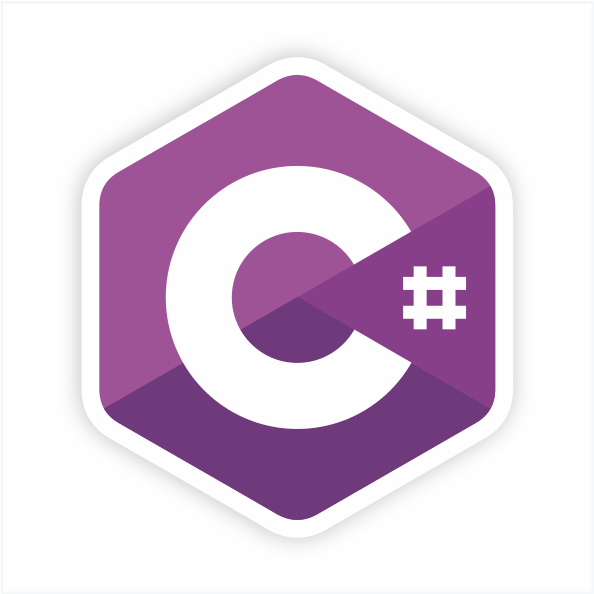
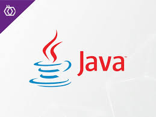

Aulas de Python

O Python é uma linguagem de programação, como você já deve ter ouvido falar de várias outras que existem. Só que foi desenvolvido para ser simples, fácil de aprender e muito versátil, ou seja, você vai poder utilizar essa linguagem para diversas tarefas. Pode construir aplicativos, criar sites, desenvolver programas, criar jogos, fazer análise de dados, inteligência artificial, entre outras atividades. Ao aprender o que é Python, você tem muitas opções. Como é uma linguagem mais fácil de aprender, é excelente para você começar no mundo da programação.
Aulas de C#
C# é uma linguagem de programação, multiparadigma, de tipagem forte, desenvolvida pela Microsoft como parte da plataforma .NET. A sua sintaxe orientada a objetos foi baseada no C++ mas inclui muitas influências de outras linguagens de programação, como Object Pascal e, principalmente, Java.
Aulas de Java
Java é uma linguagem de programação extremamente versátil. Pode ser usado para programar softwares e aplicativos para muitos sistemas operacionais e dispositivos diferentes, incluindo dispositivos IoT, celulares e computadores.
Aulas de R
R é uma linguagem de programação estatística e gráfica que vem se especializando na manipulação, análise e visualização de dados, sendo atualmente considerada uma das melhores ferramentas para essa finalidade.